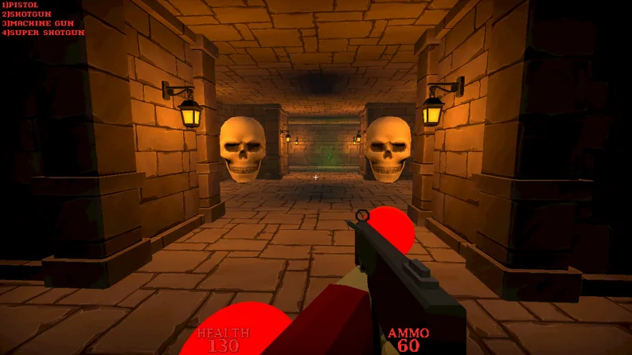
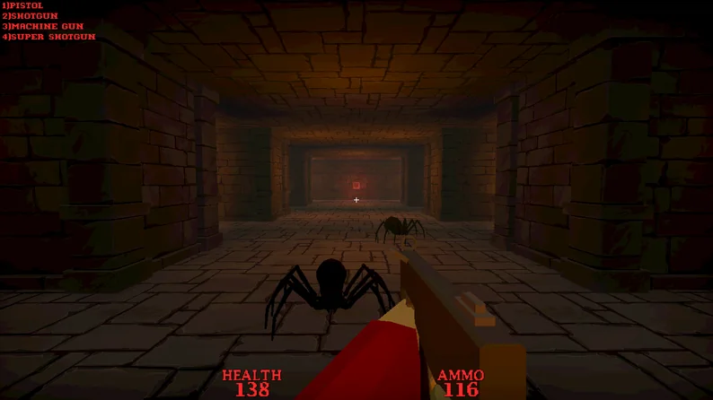
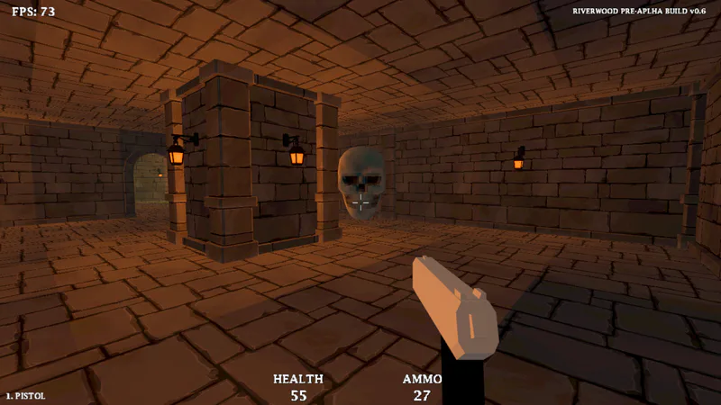

My first public release.
Riverwood is a retro first-person shooter set in the cursed castle of Riverwood. It was my first publicly released game and became an important pillar for everything that followed through years of learning.

Learning through a complete game.
The project covered the full process of making a small game: prototyping, level flow, combat, encounters, boss design, playtesting, release, and responding to player feedback.
Completing and releasing the game gave me a much better understanding of how individual mechanics become a complete player experience.


Shipping changes how you think.
Once the game was public, feedback exposed issues that were difficult to see during development. That experience changed how I approach playtesting and scope on later projects.
Key takeaway: finishing a smaller project can teach more than endlessly expanding an unfinished one.